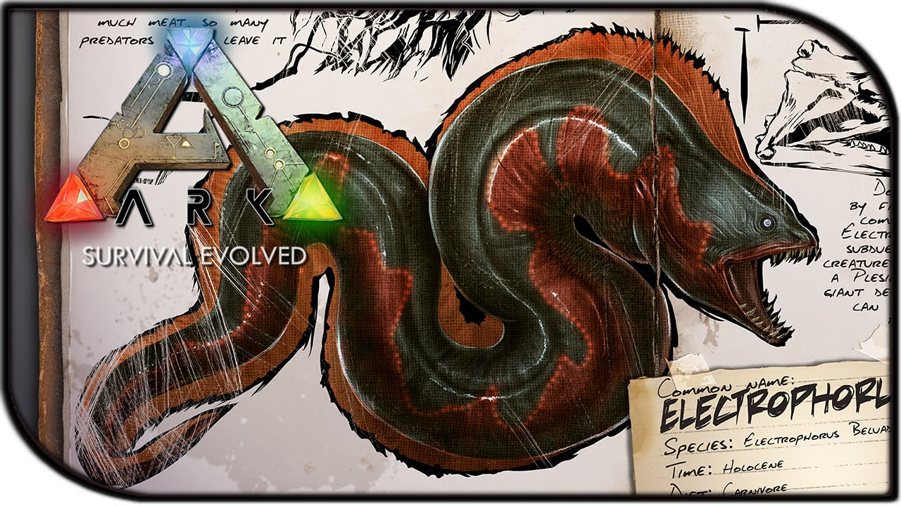

ARK SURVIVAL EVOLVED©
Welcome to the unofficial community website about Ark Survival Evolved designed and created by @G&H
"Patch 255: Tek Tier Phase 2, Electrophorus, Microraptor, Ammonite, Thylacoleo, and more!"

This update is one of the biggest updates introduced to Ark Survial Evolved! This made all Ark Player hyped for this game. Many new players are joining our wonderfull community for the early acces benefits, Join Quick! Here are some of the patch notes:
1. New Dino: Electrophorus - A carnivorous eel creature that can be tamed to subdue large aquatic creatures.
2.New Dino: Microraptor - A small non-avian Carnivore used to take down riders.
3. New Dino: Ammonite - Can be harvested in oceans for its shell and bile, but it’s defended by other ocean dwellers.
4. New Dino: Thylacoleo - A powerful carnivore that’s rideable and can be used to climb trees. Its abilities make it suitable for ambushes.
5. New Structure: Tek Forcefield.
6. New Structure: Tek Tileset & Tek Doors
.
7. New additional head head hairstyle and additional facial hairstyle.
8. 30 new Explorer Notes.
9. Rocket Launcher & C4 rebalance: C4 now does approximately 70 percent more damage to Structures than Rockets. Rocket Launcher can no longer have Item Stats (though its base Damage has been increased 20 percent to compensate). Rocket Turrets now take a slight amount of damage when they fire, and can not fire under 5 percent HP.
10. Holding Left or Right when dismounting a Dino will now dismount you in that direction.
11. C4-carrying Flyers now move at a fixed slow speed.
12. Item Stats on all Official Servers are now clamped to negate the old no-longer-achievable OP items generated by then-unbalanced Fishing Rod.
13. Added option for per-Tribe Dino Tame limit, enabling on Official PvE servers with a max of 500 Dinos Per Tribe (with on-screen indicator of Tribe Dino count). To use it, run with ?MaxPersonalTamedDinos=Number.
14.Added option to auto-destroy claimable decayed dinos on load, rather than have them remain around as Claimable. To use this, run with ?AutoDestroyDecayedDinos=true. Official PvE servers now have this enabled.
15.Various network optimizations. Major rendering and threading optimizations to come in subsequent minor version update.